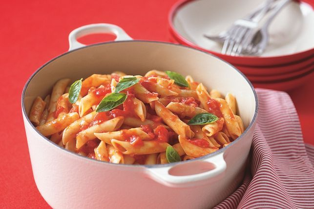

Penne arrabiata

Description
You can make this classic Italian dish really spicy, or deseed the chillies to make it less confronting. Whatever you decide, it's a winning winter warmer!
Ingredients
- 1/3 cup extra-virgin olive oil
- 1 brown onion, finely chopped
- 1 garlic clove, crushed
- 2 small red chillies, chopped (see note)
- 800g can diced tomatoes
- 1/2 cup Massel vegetable liquid stock
- 1/2 cup small basil leaves
- 400g penne rigate
- 2 tsp caster sugar
Steps
- Heat oil in a large saucepan over medium heat. Add onion, garlic and chillies. Cook, stirring often, for 6 to 7 minutes or until onion is soft. Add tomatoes, stock and 1/4 cup basil leaves. Bring to a gentle boil. Reduce heat to medium-low and simmer, uncovered, for 15 minutes.
- Meanwhile, cook pasta in a large saucepan of boiling, salted water following packet directions, until tender. Drain pasta and return to pan.
- Stir sugar into tomato sauce. Season with salt and pepper. Spoon sauce over pasta. Toss to combine. Cover and set aside for 5 minutes (this allows pasta to absorb sauce).
- Sprinkle with remaining basil. Spoon into serving bowls and serve.